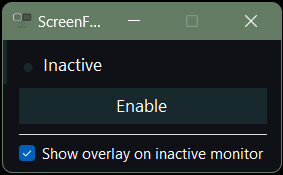

One click.
Game screen ready.
Instantly swap your primary monitor to your OLED for gaming, dim the other screen, and flip back when you're done. No settings menus, no fuss.

Features
Built for dual-monitor gamers
Instant Primary Swap
Switches your primary display to your OLED gaming monitor with a single click. Uses native Windows display APIs for instant, reliable switching.
90% Screen Dimming
Covers your secondary monitor with a near-black overlay so it doesn't distract you or wash out your OLED's contrast while gaming.
Toggle On / Off
Run it once to enter game mode. Run it again to restore everything back to normal. Same executable, zero config, just a toggle.
System Tray Resident
Minimizes to the notification area and stays out of your way. The tray icon changes to show whether game mode is active or not.
OLED Friendly
Designed for setups where your OLED is secondary to prevent burn-in during normal use, but needs to be primary for fullscreen gaming.
Lightweight & Portable
Single .exe file, no installer needed, no background services. Under 1MB. Built with C# and native Win32 APIs - nothing extra required.
How it works
Three steps. That's it.
Run ScreenFlip.exe
Double-click or bind to a hotkey. Your primary monitor swaps to your OLED and the other screen goes dark.
Game on your OLED
Your OLED is now primary. Fullscreen games, launchers, and overlays all land on the right display. The dimmed secondary won't distract you.
Run it again to flip back
Done gaming? Run the same .exe again. Primary monitor restores, overlay disappears, everything's back to normal.
NORMAL MODE
GAME MODE
Download
Ready to flip?
Windows 10 & 11. Single .exe. No install.
Download ScreenFlip v1.0